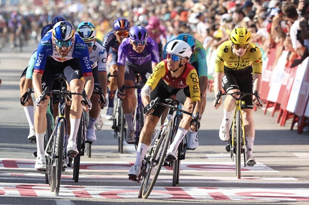
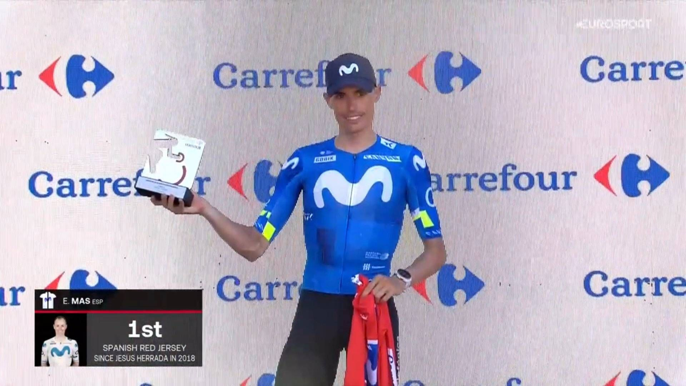

Tale of the tape
It was supposed to be a sprinters' hold-your-breath over Barx. Then Pogačar clipped what Sporza called a rock on a wide, straight road, went over the bars, and sat there bleeding from the eyebrow and shoulder until the ambulance. First Grand Tour abandon of his life. The bunch sat up out of respect, Azparren tried a late flyer, Visma's leadout died when Brennan wasn't on Laporte, and Coquard came off Meeus's wheel and threw the bike past Pedersen. Thirteen years. Thirty-nine Grand Tour top-10s. Finally one.
The GC that was a 3:50 Pogačar procession is now a Vuelta. Mas is the first Spaniard in red since Jesús Herrada in 2018 and refused to put the jersey on at the presentation, just held it. Roglič is a minute back, Gall 11 seconds behind him, Kuss and Onley a second apart at 2:15. Aitana this afternoon is the first real mountain day with nobody in lockdown.

Pogačar DNF, first Grand Tour abandon
30 Aug 2026
Stage 8, Sat 29 Aug: Puçol → Xeraco, 171 km, late Cat. 3 Puerto de Barx. Pogačar DNF ~33 km out. Also DNF: Gaffuri, Van Tricht, Uriarte. DNS: Van Boven. UAE riders who waited came in 11:33 down. A sixth crash inside 500 m took Groves and most of Alpecin; no time losses there.
Open the piece

Coquard, first Grand Tour stage at 34
30 Aug 2026
Bunch sprint. Bryan Coquard (Cofidis) 3:47:06. 2. Mads Pedersen s.t. 3. Jordi Meeus s.t. 4. Ben Turner s.t. 5. Jordan Labrosse s.t. Thirteen years. Thirty-nine Grand Tour top-10s.
Open the piece

Mas holds red, will not put it on
30 Aug 2026
Red: Enric Mas (Movistar) 23:23:33. Roglič +1:00. Gall +1:11. Kuss +2:15. Onley +2:16 (white). Green van Aert (124). Polka Leknessund (19), inherited. Tomorrow: Stage 9 Villajoyosa → Alto de Aitana, 188 km, first queen stage. Mas wears red on the road for the first time.
Open the piece